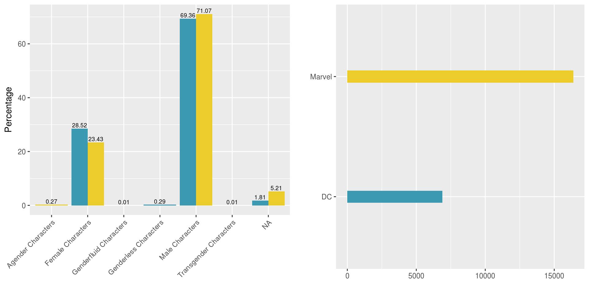
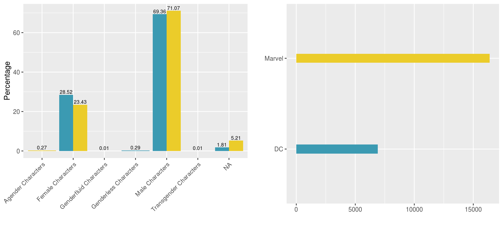
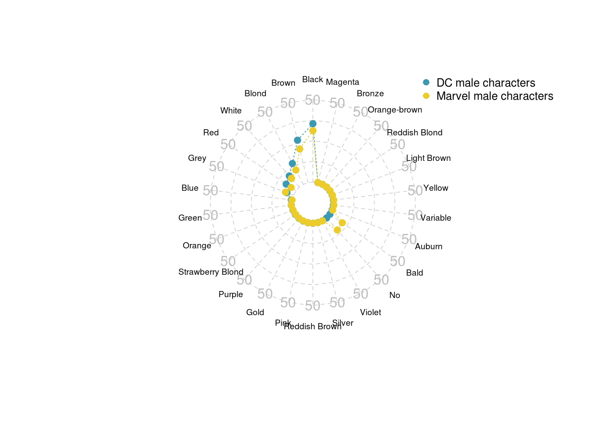
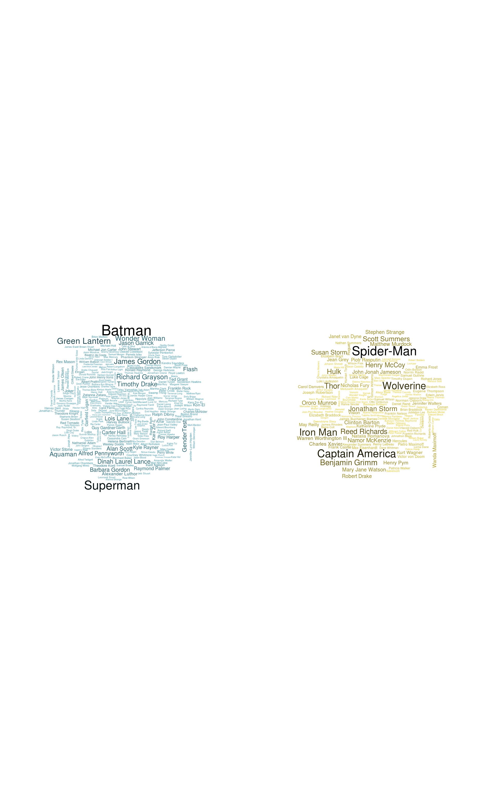

This vignette is based on 538 study : Comic Books Are Still Made By Men, For Men And About Men study about Marvel and DC characters since ~1939 until 2014 (August 24th) and aims at investigating the features of Comic Books characters according their gender / Publisher.
#load packages and csv file
library(fivethirtyeight)
# tidyverse includes ggplot2, tibble, tidyr, readr, purrr, dplyr:
library(tidyverse)
library(knitr)
library(grid)
library(fmsb)
library(wordcloud)
library(gridExtra)#calculate raw number and percentage of each gender for each publisher
raw_number_per_publisher <- comic_characters %>%
group_by(publisher) %>%
summarise(number = n()) %>%
arrange(-number)
percent_gen_pub <- comic_characters %>%
group_by(sex, publisher) %>%
summarise(number = n()) %>%
arrange(-number) %>%
group_by(publisher) %>%
mutate(countT = sum(number)) %>%
group_by(sex) %>%
mutate(
percentage = (100*number/countT),
label = paste0(round(percentage, 2)))
#plot percentage of each gender for each publisher
percentage_per_publisher <- ggplot(data = percent_gen_pub,aes(x = sex,y = percentage, fill = publisher)) +
geom_bar(width = 0.9, stat = "identity", position = 'dodge') +
theme(axis.text.x = element_text(angle = 45, hjust = 1),legend.position = 'none') +
geom_text(aes(label = label), position=position_dodge(width = 0.9), vjust = -0.25,size = 2.5) +
scale_fill_manual(values = c("#3B9AB2","#EBCC2A")) +
xlab('') +
ylab('Percentage')
raw_number_per_publisher <- ggplot(data = raw_number_per_publisher, aes(x = publisher, y = number, fill = publisher)) +
geom_bar(width = 0.1, stat = "identity") +
coord_flip() +
scale_fill_manual(values = c("#3B9AB2","#EBCC2A")) +
xlab('') +
ylab('') +
theme(legend.position = 'None')
grid.arrange(percentage_per_publisher, raw_number_per_publisher, ncol=2)
Male are more present in both publishers compared to Female on a ~2.5:1 ratio, while LGBT characters represent less than 1 percent.#select data with no NA's for sex and date and groupby
#define list of gender per publisher
gender_list_marvel <- c("Female Characters", "Male Characters", "Genderfluid Characters","Agender Characters")
gender_list_dc <- c("Female Characters", "Male Characters", "Genderless Characters","Transgender Characters")
marvel_vs_time <- comic_characters %>%
filter(publisher == 'Marvel' & !is.na(month) & !is.na(sex)) %>%
group_by(year, month, sex) %>%
summarise(number = n()) %>%
mutate(
sex_ordered = factor(sex, levels = gender_list_marvel),
month_ordered = factor(month, levels = month.name))
dc_vs_time <- comic_characters %>%
filter(publisher == 'DC' & month!= "Holiday" & !is.na(month) & !is.na(sex)) %>%
mutate(month = ifelse(month=="01","January",month)) %>%
group_by(year, month, sex) %>% summarise(number = n()) %>%
mutate(
sex_ordered = factor(sex, levels = gender_list_dc),
month_ordered = factor(month, levels = month.name))
plot_marvel_time <- ggplot(data = marvel_vs_time, aes(year, month_ordered)) +
geom_tile(aes(fill = number),colour = "white") +
scale_fill_gradient(low = "#EBCC2A", high = "black") +
facet_wrap(~ sex_ordered, ncol = 4) +
theme(axis.title.x = element_blank(), axis.ticks.x = element_blank(), axis.title.y = element_blank(), axis.ticks.y = element_blank(), legend.position = 'right', legend.title = element_blank(), legend.key.size = unit(.2, "cm")) +
xlim(1935,2015)
plot_dc_time <- ggplot(data = dc_vs_time, aes(year, month_ordered)) + geom_tile(aes(fill = number),colour = "white") +
scale_fill_gradient(low = "#3B9AB2", high = "black") +
facet_wrap(~ sex_ordered, ncol = 4) +
theme(axis.title.x = element_blank() ,axis.ticks.x = element_blank(), axis.title.y = element_blank(), axis.ticks.y = element_blank(), legend.position = 'right', legend.title = element_blank(), legend.key.size = unit(.2, "cm")) +
xlim(1935,2015)
grid.arrange(rbind(ggplotGrob(plot_marvel_time), ggplotGrob(plot_dc_time), size = "last"))
Female or Male for both publishers.Female characters appear early for Marvel (~1970) while it was in the late 70’s for DC comics.LGBT characters appear in the late 70’s (DC) and in the late 60’s (Marvel).To represent the average characteristics, radarchart will be used.
id,align,eye,hair and alive.profile representative of each publisher.Hair feature#function to aggregate data by (gender, feature, publisher)
aggregateFeature <- function(current_publisher, feature){
#empty list to keep dataframe by (gender, feature)
currentFeature <- list()
if(current_publisher == 'Marvel'){
gender_list <- gender_list_marvel
} else {
gender_list <- gender_list_dc
}
for(i in 1:length(gender_list)){
currentFeature[[i]] <- comic_characters %>%
filter(publisher == current_publisher ) %>%
select(hair, sex) %>%
na.omit() %>%
group_by(hair) %>%
filter(sex == gender_list[i]) %>%
summarise(number = n()) %>%
arrange(-number) %>%
mutate(countT = sum(number)) %>%
mutate(percentage = round(100*number/countT,1)) %>%
select(hair, percentage, number)
if(current_publisher == 'Marvel'){
colnames(currentFeature[[i]])[2]<-'percentage_marvel'
} else{
colnames(currentFeature[[i]])[2]<-'percentage_dc'
}
if(feature == 'hair'){
#strip 'hair' word for better display of the radarchart
currentFeature[[i]]$hair <- sapply(currentFeature[[i]]$hair, function(x) gsub(' Hair','', x))}
}
names(currentFeature) <- gender_list
return(currentFeature)
}#outer join the 2 dataframes for (feature=Hair, gender=Male)
merged <- full_join(aggregateFeature('DC','hair')[[2]], aggregateFeature('Marvel','hair')[[2]], by='hair')
#set min/max percentages for the radarchart limits
min <- rep(0, length(merged$hair))
max <- rep(50, length(merged$hair))
maleHair <- data.frame(rbind(max,min,merged$percentage_dc,merged$percentage_marvel))
colnames(maleHair) <- merged$hair
row.names(maleHair) <- c('max','min','percentage_dc','percentage_marvel')
maleHair[is.na(maleHair)] <- 0#cosmetics
radarchart(maleHair, #dataframe
axistype=2, #axis type
pcol=c("#3B9AB2", "#EBCC2A"), #color -Wes Anderson Sissou-
plwd=1, #axis line width
pty=19, #marker type
plty=3, #line type
cglcol="grey", #axis line color
cglty=2, #axis line type
axislabcol="grey", #Color of axis label
cglwd=.6, #line type
vlcex=.6, #font size label
palcex=1.) #font size value
legend(x=1, y=1.3, #position
legend = c('DC male characters','Marvel male characters'),#labels
bty="n", #no window
pch=16, #marker type
text.col = "black", #label colors
col=c("#3B9AB2","#EBCC2A"), #marker color
cex=.8, #marker size
pt.cex=1) #font size
By looking at the number of appearances for each characters, we can make a visualization (wordcloud) representing the most populars characters.
#remove NA from appearance column, keep only the name inside parentheses
marvel_appearances <- comic_characters %>%
filter(publisher == 'Marvel') %>%
select(name, appearances) %>% na.omit() %>%
mutate(name = gsub(" *\\(.*?\\) *", "", name))
dc_appearances <- comic_characters %>%
filter(publisher == 'DC') %>%
select(name, appearances) %>% na.omit() %>%
mutate(name = gsub(" *\\(.*?\\) *", "", name))
color_marvel <- colorRampPalette(c("#EBCC2A", "black"))
color_dc <- colorRampPalette(c("#3B9AB2", "black"))
op <- par(mar = c(1, 2, 2, 1), mfrow = c(1, 2))
wordcloud(dc_appearances$name, dc_appearances$appearances, min.freq = 100, colors = color_dc(10), scale = c(1.75, 0.2))
wordcloud(marvel_appearances$name, marvel_appearances$appearances, min.freq = 250, colors = color_marvel(10), scale = c(1.5, 0.2))
Batman(DC) and Spider-Man(Marvel) ends up being the characters with the most appearances.